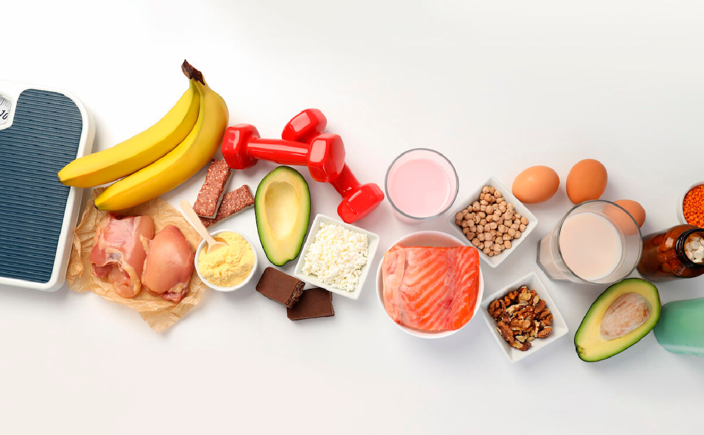

Historia de NutriDesk
Descubre la historia detrás de NutriDesk, desde sus humildes comienzos hasta convertirse en un referente en nutrición saludable. Una trayectoria de pasión, innovación y compromiso con la salud.
Orígenes de NutriDesk
NutriDesk nació en 2020 con la visión de hacer que la alimentación saludable sea accesible y deliciosa para todos. Nuestra filosofía se basa en la creencia de que la comida no solo nutre el cuerpo, sino que también eleva el espíritu. Desde nuestros inicios en una pequeña cocina, hemos crecido gracias a la pasión por ingredientes frescos y naturales.
Evolución y Crecimiento
- 2020-2021: Lanzamiento del blog con artículos básicos y consejos gratuitos.
- 2021: Expansión a redes sociales y colaboración con influencers de salud.
- 2022: Introducción de planes nutricionales personalizados y app móvil.
- 2023: Asociación con clínicas y crecimiento internacional.
- 2024: Más de 100,000 usuarios activos y premios en innovación nutricional.
Logros y Impacto
NutriDesk ha transformado vidas ayudando a miles a mejorar su salud. Nuestros logros incluyen certificaciones de calidad, testimonios de usuarios y contribuciones a la comunidad, como talleres gratuitos en escuelas.
| Año | Logro Principal |
|---|---|
| 2021 | Primer premio en blog de nutrición |
| 2022 | 100,000 visitas mensuales |
| 2024 | Certificación ISO en servicios de salud |
Visión Futura
Miramos al futuro con entusiasmo: expandir a más países, integrar IA para planes personalizados y promover sostenibilidad en la alimentación. ¡Únete a nuestro viaje por una vida más saludable!